①研究问题
要解决的具体 gap
双足/四足机器人本体感觉状态估计（不依赖相机/LiDAR）通常依赖 Invariant EKF + Leg Odometry 范式（Bloesch 2012, Hartley 2020）。整套体系的可靠性根植于"接触点何时静止"这一离散判断：
- 二值接触状态（in-contact / not-in-contact）由力阈值、运动学/动力学融合等启发式给出；
- 滑动检测靠手工阈值（速度阈、Mahalanobis 阈），slip 时通常把协方差放大 10×之类手动膨胀。
这在动态、富接触场景（舞蹈、剧烈地面交互、部分接触、方向性滑移）下会持续误判：
- "部分接触"（如脚掌只有一部分受力）会被强行归类，违反静止假设；
- "方向性滑移"（沿某方向滑、沿另一方向静）无法用单一布尔/标量协方差表达；
- 启发式失败会让滤波器估计发散（论文 Table III: 启发式 InEKF 线速度 ATE 2.675 m/s）。
关键假设
- 所有接触候选点的位置可以在滤波器状态中常驻（不再动态增删），代价是把"非接触"建模成高协方差的接触。
- "接触条件"不是布尔属性，而是一个3×3 协方差矩阵，可以同时表达"两个方向稳、一个方向滑"。
- 一个浅 MLP（240K 参数）+ BPTT 端到端就足以学到这个协方差预测，无需 ground-truth 接触标签。
- 训练只需在仿真中 rollout，real-world 直接零迁移（仅在仿真中训练 → real-world 评估）。
与最近相关工作的对比定位
- Lin et al. 2022 (Hybrid Baseline, CoRL) — 同样在 InEKF 上叠神经网络，但网络分类二值接触，仍需 ground-truth contact 标签做监督。CoCo-InEKF 直接预测连续协方差，仅用 state-error loss，绕开标签需求。
- Kim et al. 2025 (Adaptive InEKF, IROS) — 自适应调节接触协方差，但仍是手工设计的调节策略。CoCo-InEKF 用 MLP 学整个映射。
- Yu et al. 2024 (SET, IROS) — 纯 Transformer 端到端状态估计器，不带物理先验。论文以 SET-small/large 作为纯数据驱动基线，证明：纯数据驱动在 OOD 鲁棒性与算力上仍输给"物理 + 学习"混合架构。
- Hartley et al. 2020 (Contact-Aided InEKF, IJRR) — CoCo-InEKF 的骨架。区别：所有 contact 点持续保留在状态中以实现可微，而非按接触事件动态增删。
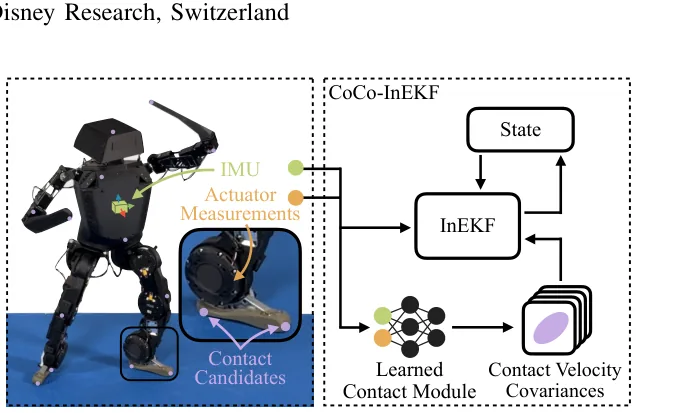
②核心洞察
不再把"接触"建模成布尔状态，而是建模成一个 3×3 速度噪声协方差。这样"在地面静止 / 沿 x 方向滑动 / 完全不在地面" 都可以用同一组参数化（一个 SPD 矩阵）连续表达，并且这个映射可以从一个小 MLP 端到端学出来——只用下游状态误差作为监督信号，不需要任何接触事件标签。
第二个洞察：把所有接触候选点永久保留在状态向量中（而非按事件动态增删），整个 InEKF 就变成了一个静态可微计算图，BPTT 自然可用，又保留了 InEKF 的 Lie-group 不变性与可观性。
③技术方法
整体框架
状态向量（标准 Contact-Aided InEKF）：
包括 base 姿态/速度/位置、N 个接触候选点位置（在世界系）以及 IMU 偏置。关键修改：不再事件驱动地添加/删除接触点，所有 N 个候选点持续存在；过程噪声中的接触点速度协方差由神经模块预测。
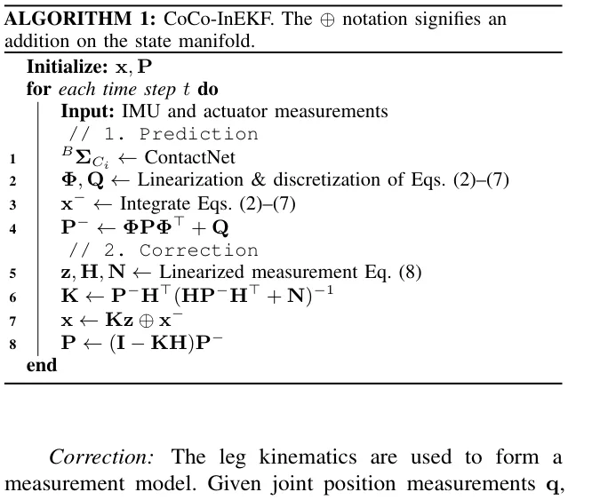
预测方程（关键的修改在 Eq. 5）
当 \({}^{B}\boldsymbol{\Sigma}_{C_i}\) 很小时，等价于"接触点保持静止" → 强约束；当某方向上协方差大时，沿该方向放行 → 允许滑移；全部很大 → 等价于"不在接触"。
观测方程（Leg Odometry，标准做法）
核心组件：Learned Contact Module
一个轻量 MLP（240K 参数），输入是长度 \(H=20\) 的本体感觉历史：
包含 IMU 角速度/加速度、关节角/速度、力矩、相对接触点位置/速度——故意不喂 InEKF 内部状态，避免学习器与滤波器形成复杂反馈回路。
输出为下三角矩阵 \(\mathbf{L}\) 的 6 个元素，协方差由 \({}^{B}\boldsymbol{\Sigma}_{C_i} = \mathbf{L}\mathbf{L}^{\top}\) 给出，天然 symmetric 且 positive-semidefinite（Cholesky 因子化技巧）。
训练 Pipeline (BPTT)
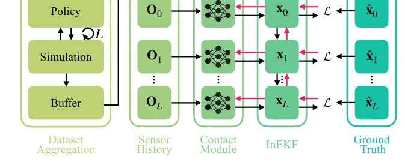
损失函数（仅监督 body-frame 线速度）
- 只用 body-frame 速度——下游控制策略消费的量，且不受 InEKF 全局位置/yaw 漂移影响。
- 无需 ground-truth 接触标签——这是相对 Lin 2022 的最大解放。
- 每个 episode 开头把 InEKF 重置为真值；后续 InEKF 自由漂移 → loss 是 rollout 的累计误差。
- 作者实验过"每步都强制重置 InEKF 到真值（force-teacher）"，反而训练性能下降。
自动接触候选点选择
避免对每个新机器人都手工挑接触点：用 farthest point sampling，从每个 rigid body 上的网格表面采 \(10N\) 个点，迭代选出 N 个相距最远的点（自动覆盖手脚等末端）。后续实验证明：自动选点与手工选点性能持平甚至更优。
④实验结果
实验平台与训练设置
- 机器人：Lima 双足，0.84 m、16.2 kg、20 DoF，Intel i7 4-core @1.7 GHz 板载，600 Hz 控制环。
- 场景：两个——Dancing motions（仅脚部接触，VMP 策略追踪 Reallusion 数据集 81 条 5.6–36.1s 动作）与 Ground motions（全身接触，stylized falling）。
- 训练：单张 RTX 4090，5 天上限或 100k 迭代；E=1280 并行环境，H=20，L=128。
- 评测：每个 test set 100 条 20 s 序列；指标 ATE（RMSE/MAE/MED/STD）+ NEES。
仿真基准：Dancing Motions
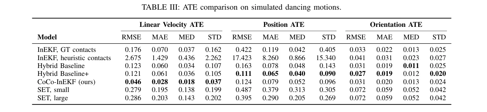
- 线速度 RMSE: 0.046（vs Hybrid Baseline+ 0.121，−62%）
- 启发式 InEKF：2.675 m/s（发散）→ 学习接触检测从根本上挽救了滤波器
- SET-large（4.77M 参数）：0.286——纯数据驱动 + 大模型仍远落后
仿真基准：Ground Motions（全身接触）
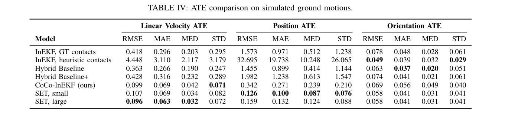
滤波器一致性（NEES）
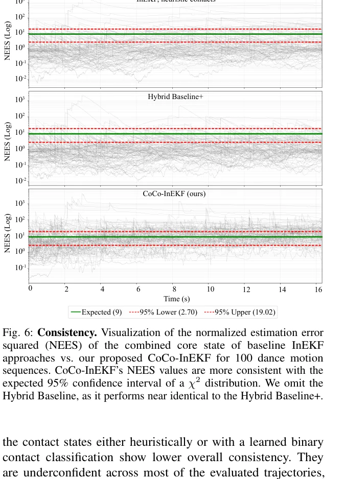
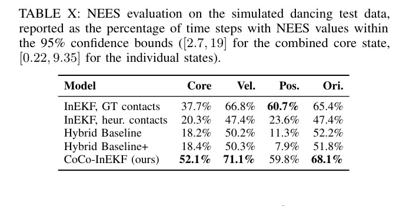
接触协方差的可解释性
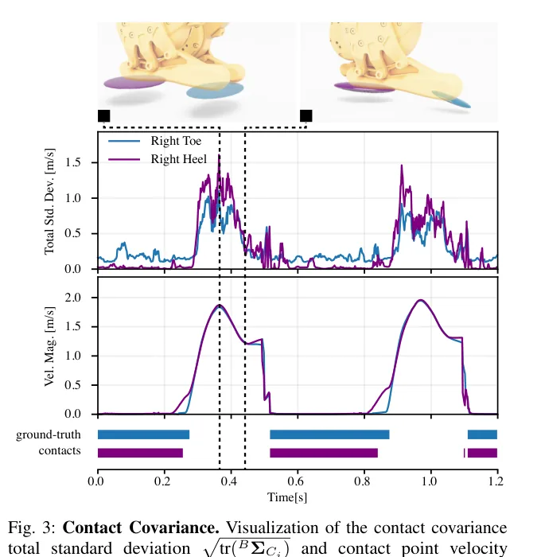
消融研究
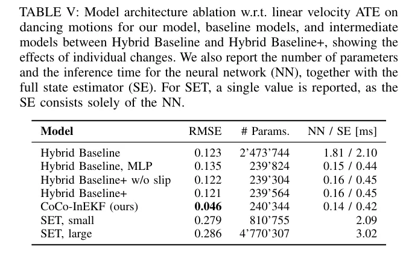
历史长度 / BPTT 长度 / 接触点数
- H (history): 20 优于 150——更长历史反而过拟合且推理慢 5×。
- L (BPTT): 128 optimal；64 学不到长视野；256 受梯度消失/爆炸影响。
- N (contact points): 4→10→18 单调提升精度（0.134→0.099→0.069），代价是推理时间从 0.42 ms 升到 2.01 ms。
自动 vs 手工接触点
Table IX：自动选点与手工持平，dancing 0.056（自动范围 0.052–0.057），ground 0.092–0.104（自动）vs 0.099（手工）。对新机器人零工程量部署。
实机评估（Real-World）
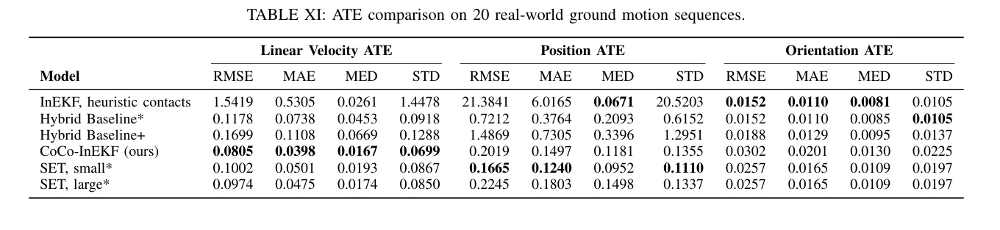
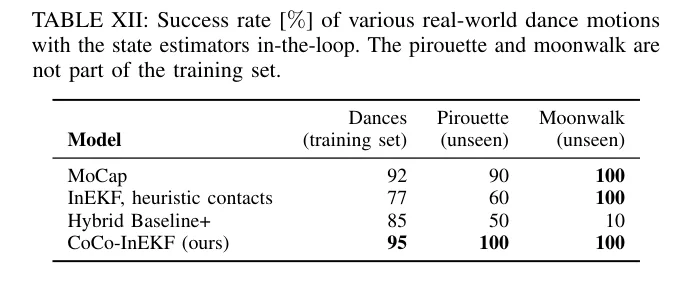
Analysis（解读）
- "连续协方差"是关键变量：架构 ablation 显示，仅在网络架构上动手 (Hybrid → Hybrid+) 只能拿到 5× 加速而 ATE 几乎不变（0.123→0.121）；换成 CoCo-InEKF 的协方差 + state-error loss 才一举把 ATE 降到 0.046。证明不是模型容量、而是"建模选择"决定上限。
- "无 ground-truth contact 标签"在工程上极其重要：Lin 2022 训练时需要在仿真里专门生成 binary contact 标签，并依赖手工阈值的伪标签；CoCo-InEKF 直接用 state-error loss，让"哪里是接触"自然涌现。
- 纯数据驱动 (SET) 输给"物理 + 学习"：SET-large 在仿真 ground motions 上线速度 RMSE 0.096 与 CoCo-InEKF 0.099 接近，但实机 0.0974 vs 0.0805，且 20× 参数、7× 推理时间、跑不进 600 Hz 控制环。物理先验在 OOD 鲁棒性 + 算力效率上仍有不可替代价值。
- NEES 比 ATE 更能区分滤波器质量：基线在 ATE 上"还能看"，NEES 上才暴露 under-confident 问题（覆盖率仅 18%）。CoCo-InEKF 的 52.1% 显示出真正的概率诚实性。
⑤批判性分析
- 建模上的认识论升级：把"接触 = 布尔状态"换成"接触 = 速度协方差"，这是一个真正的概念跃迁，不只是工程改良。
- 训练自由度高：仅 state-error loss，免去 GT 接触标签和滑移类别人工设计——可被几乎所有腿足机器人项目直接复用。
- 实时性能：240K 参数 / 0.42 ms 端到端推理，能上 1.7 GHz Intel i7 跑 600 Hz 控制环。这是 robotics 系统层面非常可贵的工程指标。
- NEES 一致性领先：超过用 ground-truth contacts 的 InEKF 本身（52.1% vs 37.7%），说明"宽松的概率建模"比"理想布尔接触"在统计意义上更好。
- 仿真→实机零迁移：训练只在仿真，测试直接上实机舞步与 MoCap，sim-to-real gap 实际表现是误差比仿真还小（作者归因于实机动作不如随机化的仿真极端、IMU 偏置可能更小）。
- 自动接触点选择 + Lima 实际舞蹈应用：来自迪士尼角色机器人项目，paper 工程契合实际部署需求。
- 损失只惩罚 body-frame 线速度，position/orientation ATE 上略输 Hybrid Baseline+（作者认为加 position/orientation 损失项是 trivial 改进）。
- 训练全部在仿真完成，仅评估了 sim-to-real；未训练在真机数据上（未来工作）。
- BPTT 长度 ≥ 256 时性能开始下降——可能是梯度问题或训练迭代数不够。
- 未与基于外感（LiDAR/Vision）的状态估计融合，仅本体感觉。
- 仅评估一个机器人 (Lima 双足)。论文反复强调"diverse robot morphologies"，但实验全是 Lima。四足、轮腿、人形（其他平台）的 contact 几何与动力学差异极大，未跨平台验证就声称通用性，结论强度有限。
- 没有给出训练策略的细节：dancing 用 VMP[34]、ground motions 用 stylized falling[35]，但策略本身的鲁棒性会与 contact 检测耦合。如果换成更激进的强化学习策略，CoCo-InEKF 是否仍稳？未答。
- NEES 仅在 dancing 数据上做。ground motions、real-world 都没给 NEES 一致性数据——可能因为 ground motions 上 NEES 更糟而未报。
- "接触协方差"训练损失里没有任何先验项。完全靠 body-vel 残差倒推协方差，理论上欠定：很多协方差组合都能产生相同的 body-vel 估计（特别在长时序里）。Figure 3 的物理对齐是涌现的、不是被保证的。换不同的 motion distribution 是否还能 emerge 出物理可解释的协方差？没回答。
- 无代码 / 数据开源声明。只在 Disney Research 站点提供 PDF，未提及代码、训练数据集（VMP 控制器与训练 motions）；reproducibility 受限。
- 对 IMU 偏置的处理依赖 force-init 真值：每个 episode 开头把 InEKF 重置为真值。实机部署时如何 cold-start？需要一个 warm-up 流程，论文未讨论。
- 真实机舞蹈测试样本不对称：训练舞步 5 × 13 = 65 次（成功率 95→61.75 次），unseen 仅 10 次试验，置信区间宽。
- 计算可解释性的协方差椭球与 ground-truth 接触没做定量对齐：只展示了一段 forward walking 的时序图（Figure 3），看起来对齐但没量化"协方差与真实摩擦/接触状态的 correlation"。
Reproducibility Assessment
| 维度 | 状态 | 说明 |
|---|---|---|
| 代码与权重 | ✗ 未开放 | 论文未提及 GitHub repo / model weights |
| 数据 | ⚠ 部分 | 引用 Reallusion 商业舞蹈数据集；VMP 策略来自合作者已发表工作 |
| 算力 | ✓ 普及 | 单张 RTX 4090，5 天即可训练；硬件门槛低 |
| 方法细节 | ✓ 充分 | Algorithm 1 + 完整 InEKF 方程 + MLP I/O 全部给出，可独立复现 |
| 消融 | ✓ 完备 | 架构、H、L、N、自动选点都有 ablation |
⑥总评（Andrew Ng 三视角）
Authors' Conclusion
CoCo-InEKF 用一个可微 InEKF + 学习接触协方差模块，端到端通过 BPTT 训练，避免了 binary contact 标签，处理了部分接触/方向性滑移等复杂状态。在 Lima 双足机器人上推动了 accuracy-efficiency 帕累托前沿，能跑在 600 Hz 板载控制环内；自动接触候选选择支持新机器人零工程量部署。未来希望在真机数据上联合训练，并融合 LiDAR/Vision 做 global drift correction。
Personal Assessment
- 核心贡献清晰扎实：把建模重心从"分类接触事件"转到"预测过程噪声协方差"，这一步本身就让 state-error loss 成为可能。后续的 BPTT 训练、Cholesky 因子化、自动选点都顺理成章。
- 架构 ablation (Table V) 是最有说服力的实验：单变量地从 Hybrid Baseline → Hybrid+ → CoCo-InEKF，只有最后一步（连续协方差 + state-error loss）带来质变。这种"切片实验"在大模型论文里越来越少见，难得。
- 限于单一机器人 + 闭源，是这篇文章下限的两个关键风险。如果作者后续开源代码并在 ANYmal/HumanoidX 之类社区平台复现成绩，这篇论文会成为继 Lin 2022、Hartley 2020 之后的新事实标准。
- 更广视角：这是"differentiable physics filter + learned residuals"思路在 legged state estimation 的最新落点，与 Manipulation 领域的 differentiable filters (α-MDF, KalmanNet) 形成呼应——证明"keep the prior, learn the noise"在多个 robotics subfield 都有效。
Overall Evaluation
- Core idea
- 把 contact-aided InEKF 改造成 differentiable filter（所有 contact points 常驻状态），用 MLP 端到端预测 per-contact 速度协方差 (Cholesky 参数化)，仅靠 body-velocity state-error loss + BPTT 训练。
- Main highlight
- 用 240K 参数、0.42 ms 推理 → 比启发式 InEKF 提升 58×、比 Hybrid Baseline 提升 2.6×（dancing 线速度 ATE），NEES 一致性超过用 GT 接触的 InEKF，实机舞蹈成功率 95–100%。
- Rating
- Important 不算 Breakthrough（differentiable filter + learned noise 已是成熟思路），但作为 legged state estimation 在 contact-rich dynamic motions 上的新事实基线，对 humanoid/quadruped 实际部署有极高直接价值。
Future Directions
- 在真机数据上联合训练（半监督——MoCap 提供部分状态 + 大量 unlabeled real rollout）。
- 融合外感传感器（LiDAR、视觉惯性）做 global drift correction，把这套 contact prior 接入 SLAM 框架。
- 跨多个机器人形态（四足、轮腿、人形）验证 generalization，开源 model zoo。
- 在协方差预测里引入显式物理先验（如摩擦锥、地面法向）作为正则化，减弱"涌现"的不确定性。
- 探索是否能学到"协方差代表的 contact mode classifier"作为副产品，提升可解释性。
- 把同一思路移植到 manipulation（grasp contact estimation）：物理 prior + learned noise 也许同样能击败纯端到端方案。
⑦理解自检
作者想达成什么？
在动态、富接触场景（舞蹈、剧烈摔倒、复杂地面交互）下，让 InEKF-based 状态估计器不再因为 binary contact 启发式而失败，又不放弃 InEKF 的不变性/可观性优势，并能在 600 Hz 板载控制环里实时运行。
方法的关键要素？
- 把所有接触候选点常驻状态 → 整个 InEKF 变成静态可微计算图。
- 用 MLP 预测每个接触点的 3×3 速度协方差（Cholesky 参数化 \({}^{B}\boldsymbol{\Sigma}_{C_i} = \mathbf{L}\mathbf{L}^{\top}\)）替代 binary contact。
- 仅用 body-frame 线速度 L2 loss 通过 BPTT 端到端训练，无需 ground-truth contact 标签。
- Farthest point sampling 自动选接触候选点，支持零工程量适配新机器人。
我能用什么？
- "Differentiable filter + learned residual / noise"思路可以推广到任何带有强先验的 robotics 子领域（SLAM、grasping contact、manipulation 等）。
- Cholesky 参数化输出 SPD 协方差矩阵是个很实用的技巧——任何需要输出有效协方差的神经网络都适用。
- State-error loss 替代分类标签：当 GT labels 难获取但下游 state 可监督时，这种"绕开标签"的训练范式高效且省事。
- 训练 + 模型大小都极小：240K 参数、单张 4090、5 天——这种规模的 legged perception 项目可在实验室轻松复制。
值得继续读的引文
- Hartley et al. 2020 (IJRR) — Contact-Aided InEKF 原始论文，本方法骨架
- Lin et al. 2022 (CoRL) — Hybrid Baseline，本论文最直接对照
- Bloesch et al. 2012 (RSS) — leg odometry + IMU EKF 的奠基
- Haarnoja et al. 2016 (NIPS) — Backprop KF，differentiable filter 思想起源
- Lee et al. 2025 (IROS) — InEKF + neural compensator，思路最接近的并行工作
- Yu et al. 2024 (IROS) — SET Transformer 状态估计器，纯数据驱动对照基线
- Zhang & Scaramuzza 2018 (IROS) — ATE/RMSE 等量化轨迹评估的方法论参考